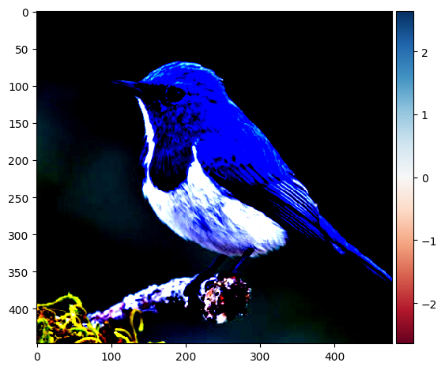

import torch
import torch.nn as nn
from skimage import io
import numpy as np
import albumentations as A
import matplotlib.pyplot as pltVisualize Salincy Maps in Timm Models (ViT) using PyTorch Hooks?
Vision Transformer
Deep Learning
PyTorch
Timm
Tutorial code of how I Visualize Attention Maps and Feature Maps (Salieancy Maps) in PyTorch timm using PyTorch Hooks as timm does not provide attention intermediates
img_path = "/kaggle/input/image-net-visualization/bird_1.png"
model_path = "vit_small_patch16_224.dino"
image_size = 1024def get_image(im_path, shape=image_size):
img = io.imread(im_path)[:,:,:3] ## HXWXC
H,W,C = img.shape
org_img = img.copy()
img = A.Normalize()(image=img)["image"] ## HxWxC
norm_img = img.copy()
img = np.transpose(img,(2,0,1)) ## CxHxW
img = np.expand_dims(img,0) ## B=1,CxHxW
img = torch.tensor(img)
img = nn.Upsample((shape,shape),mode='bilinear')(img)
return img, norm_img, org_imgimg,norm_img,org_img = get_image(img_path)io.imshow(org_img)io.imshow(norm_img)
%%capture
! pip install timmimport timm
model = timm.create_model(model_path,pretrained=True,
img_size=image_size,
dynamic_img_size=True)model = model.cuda()outputs = {}
def get_outputs(name:str):
def hook(model, input, output):
outputs[name] = output.detach()
return hookmodel.blocks[-1].attn.q_norm.register_forward_hook(get_outputs('Q'))
model.blocks[-1].attn.k_norm.register_forward_hook(get_outputs('K'))
model.blocks[-1].register_forward_hook(get_outputs('features'))
model(img.cuda())tensor([[-1.6873e+00, 3.3118e+00, 1.6206e-02, 7.5276e+00, -3.8783e+00,
7.9405e-01, -2.5275e-01, -9.2937e-01, -7.6219e+00, 1.8461e+00,
-3.7896e+00, 6.9062e+00, 4.9580e+00, 7.0582e+00, -1.4598e+00,
1.8604e+00, 3.1002e+00, -2.3646e-01, 9.7898e-01, 1.4716e-01,
4.8010e+00, 9.8696e+00, -6.2256e+00, -4.0314e+00, 4.8572e-01,
4.6386e+00, 5.2622e+00, 8.2102e+00, 6.6765e+00, -1.0041e+01,
9.1688e-01, 2.6036e+00, 1.0652e+00, -1.0549e+01, -1.5771e+00,
-2.4766e+00, -4.6636e+00, 5.6768e+00, -1.7559e+00, -4.9503e-01,
-2.5628e+00, 1.0277e+01, -4.6592e+00, -3.6269e+00, 6.4073e+00,
-2.8656e+00, -8.2731e+00, 9.1952e+00, -2.4074e+00, -5.6380e-01,
-3.4731e+00, -4.7151e+00, 1.8822e-01, -3.8197e+00, 2.5455e+00,
-1.3325e-01, -4.3335e+00, 7.5765e+00, -3.5712e+00, -4.4365e+00,
4.9343e-01, 9.1502e-01, 1.0584e+01, 3.9611e+00, 3.8866e+00,
-4.6030e+00, 1.4714e+00, 4.2984e-01, -3.4557e+00, 1.0801e+00,
-4.1478e+00, 5.2226e+00, 2.8259e+00, 9.7525e-01, 6.9041e+00,
1.2095e-01, 2.4013e+00, 1.6391e+00, -6.0108e+00, -9.3346e+00,
-4.0121e+00, 1.8157e+00, -7.2864e-01, 8.5839e+00, -1.0082e+01,
1.2923e+00, -1.8654e+00, -1.0347e+01, 4.6857e+00, -2.7471e+00,
3.4723e+00, 4.6032e+00, -2.5349e+00, -2.0960e+00, 1.6807e-01,
1.9170e+00, -6.1443e+00, 1.0321e+00, -1.6014e+00, 5.8918e+00,
9.2721e+00, -1.2786e+00, -6.3613e+00, 5.5546e+00, -1.2483e+01,
3.0828e+00, -6.0050e-02, -1.3473e+01, 6.6318e-01, -5.3011e+00,
-3.5312e+00, -1.5129e+00, 4.1372e+00, 1.4356e+00, 1.0351e+01,
-1.7940e+00, -1.2211e+01, 2.8142e+00, -1.5071e+00, -6.9505e-01,
-3.1786e+00, 7.8665e+00, 6.7557e-01, 2.6826e+00, -2.4210e+00,
-2.8962e+00, 5.5639e+00, -1.8775e+00, -1.2859e+01, -7.5849e-01,
1.6650e+00, 2.6447e+00, -6.3936e-01, 1.5060e+00, 6.0126e-01,
3.9601e+00, -1.8724e+00, -3.1135e+00, -2.8265e+00, 1.6418e+00,
-5.6146e+00, -9.4629e-02, -1.3282e-01, 7.6737e+00, -1.5090e+00,
5.6526e+00, -9.7128e-01, -3.6167e+00, 1.7872e+00, -2.7470e+00,
-2.4107e+00, -7.7301e-03, 5.4260e+00, -2.6830e-01, -6.0379e-01,
2.4405e+00, -3.0422e+00, -6.1176e+00, -1.3285e+00, -1.1136e+01,
-3.1303e+00, 2.8008e+00, 2.7368e+00, -2.8170e+00, -4.1028e+00,
5.4076e+00, 1.6082e+00, -9.9726e-01, 5.4990e+00, 1.8774e+00,
-5.4387e-01, -2.9433e-01, 3.6973e+00, -4.5119e+00, -3.5505e+00,
2.8779e+00, 3.0147e-01, -2.3486e+00, -1.5237e+00, 1.1389e+00,
2.2250e+00, 6.8706e+00, 3.7546e+00, -1.6722e+00, -6.4871e-01,
3.2394e+00, 6.6144e-01, 1.0893e+00, 1.1054e+00, 4.0759e+00,
-4.9504e+00, -4.0154e+00, -1.4490e+00, 1.8689e+00, -3.9057e+00,
2.2533e+00, -6.3996e+00, -5.5835e-01, 2.4417e+00, 2.1308e+00,
3.9925e+00, 4.4550e-01, 1.1531e+00, 4.7416e+00, 2.0096e+00,
-1.2605e+00, -9.5855e-01, -5.2844e+00, -4.0194e+00, 7.0700e-01,
5.4294e+00, 3.3919e+00, 4.9089e+00, 4.1371e-01, 2.2920e+00,
-1.7367e-01, -4.7534e+00, 5.0581e+00, 8.1151e+00, -1.5215e+00,
3.7808e+00, -2.9530e+00, -9.3015e+00, 6.1947e-01, -3.9256e-01,
-4.1782e+00, 1.9628e+00, 6.7975e+00, 1.2619e+00, 1.7882e+00,
-9.8904e-01, -3.4642e-01, -2.1700e+00, 8.9316e+00, 4.0332e+00,
-3.3242e+00, 3.7758e+00, 2.3272e+00, -2.6639e+00, 1.8211e+00,
2.0843e+00, 9.2511e+00, 7.0950e-01, 2.3567e+00, -3.4504e+00,
-1.2123e+01, -2.2370e-01, -4.0639e+00, -7.6606e-01, -5.7467e-01,
6.2722e+00, -1.1846e+00, 7.4569e-01, -2.3022e+00, -7.6787e+00,
1.5879e+00, -5.4248e+00, 4.4352e+00, -3.0992e-01, -9.8239e+00,
4.7596e+00, -7.8933e+00, -1.5991e+00, 3.5556e+00, -8.2829e+00,
-2.8837e+00, 8.0843e+00, 4.4499e+00, -7.8938e+00, 1.1607e+01,
3.3790e+00, -1.0773e+01, 4.5276e+00, 2.0844e+00, 2.4876e+00,
2.4884e+00, 2.1223e-01, -3.0398e+00, -6.3939e+00, -2.2402e+00,
-9.1261e-01, 2.2716e+00, 7.5233e+00, 3.2600e+00, 1.3579e+00,
3.0965e+00, -1.2645e+00, 3.8311e-01, -3.8111e+00, -1.9618e+00,
2.7574e+00, 1.0933e+01, -8.1753e+00, -5.7976e-01, 4.3519e+00,
-3.1721e+00, 3.5473e+00, 8.9204e-01, -5.8862e+00, 5.9441e+00,
-4.1584e+00, 2.6372e+00, 5.9613e-01, -3.5491e+00, -7.7043e+00,
-5.9683e+00, -1.9161e-01, -3.4110e+00, -4.9706e+00, 3.6422e+00,
2.0380e+00, -1.7211e-01, 2.2398e+00, -8.1027e-01, -1.7448e+00,
-8.5672e-01, -3.8151e-02, -1.5993e+00, 3.6409e+00, 3.0737e+00,
1.5809e-01, -2.5176e-01, 3.4933e+00, -6.0633e+00, 6.0766e+00,
6.8786e+00, -2.1457e+00, 4.7027e-01, -5.3296e-01, -9.8374e+00,
-4.7503e+00, -1.6798e+01, 5.6179e+00, 1.0797e+00, 9.5722e-01,
1.0259e+01, 2.4940e+00, 5.1237e+00, -3.9690e+00, 6.3755e+00,
-2.4782e+00, 5.0692e+00, 1.1048e+00, -3.4466e+00, -8.6174e+00,
-1.3207e+00, -1.0411e+01, -1.8757e+00, -1.1057e+01, -5.9575e+00,
1.0189e+00, 2.0985e+00, -3.2184e+00, -3.6003e+00, -4.3049e+00,
3.8259e+00, -4.0951e+00, -1.8868e+00, -4.7576e+00, -6.7396e+00,
6.9816e-01, -2.2439e+00, -4.5493e+00, 8.9310e+00, -1.6068e-01,
-2.5645e+00, 7.0637e+00, 1.7403e+01, 2.9385e+00, 1.5559e+00,
5.3462e+00, 1.3728e+01, 3.9456e+00, -5.9510e+00, 3.1551e+00,
4.6709e+00, -3.6971e+00, -1.2921e+00, 2.9455e+00, 4.7313e+00,
-2.5174e+00, 6.0789e+00, -7.3726e+00, -2.1013e+00]], device='cuda:0',
grad_fn=<SelectBackward0>)scale = model.blocks[-1].attn.scaleoutputs["attention"] = (outputs["Q"]@ outputs["K"].transpose(-2, -1))#*scale
# outputs["attention"] = outputs["attention"].softmax(dim=-1)outputs["attention"].shapetorch.Size([1, 6, 4097, 4097])b,num_heads,num_patches_1,num_patches_1 = outputs["attention"].shape
map_size = int(np.sqrt(num_patches_1-1))
for attention_head in range(num_heads):
attention_map = outputs["attention"][:,attention_head,0,1:] ## 1,4096
attention_map = attention_map.view(1,1,map_size,map_size)
attention_map = nn.Upsample(size=(image_size,image_size))(attention_map)
attention_map = attention_map[0,0,:,:].detach().cpu().numpy()
io.imshow(attention_map)
plt.show()outputs["features"].shapetorch.Size([1, 4097, 384])features = outputs["features"].mean(-1)
features = features[:,1:]
features = features.view(1,1,map_size,map_size)
features = nn.Upsample(size=(image_size,image_size))(features)
features = features[0,0,:,:].detach().cpu().numpy()
io.imshow(features)/opt/conda/lib/python3.10/site-packages/skimage/io/_plugins/matplotlib_plugin.py:149: UserWarning: Low image data range; displaying image with stretched contrast.
lo, hi, cmap = _get_display_range(image)